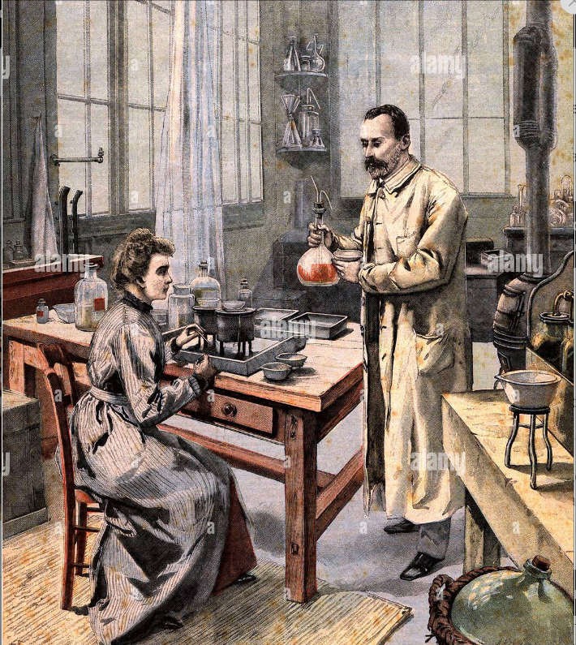

Featured Achievements

Discovery of Radium and Polonium
In 1898, Marie Curie and her husband Pierre discovered two new elements: radium and polonium, the latter named after her native country.

Nobel Prize in Physics (1903)
She was the first woman to win a Nobel Prize and shared the Physics Prize with her husband Pierre Curie and physicist Henri Becquerel.

Nobel Prize in Chemistry (1911)
Marie Curie became the first person to win Nobel Prizes in two different scientific fields when she was awarded the Chemistry Prize.